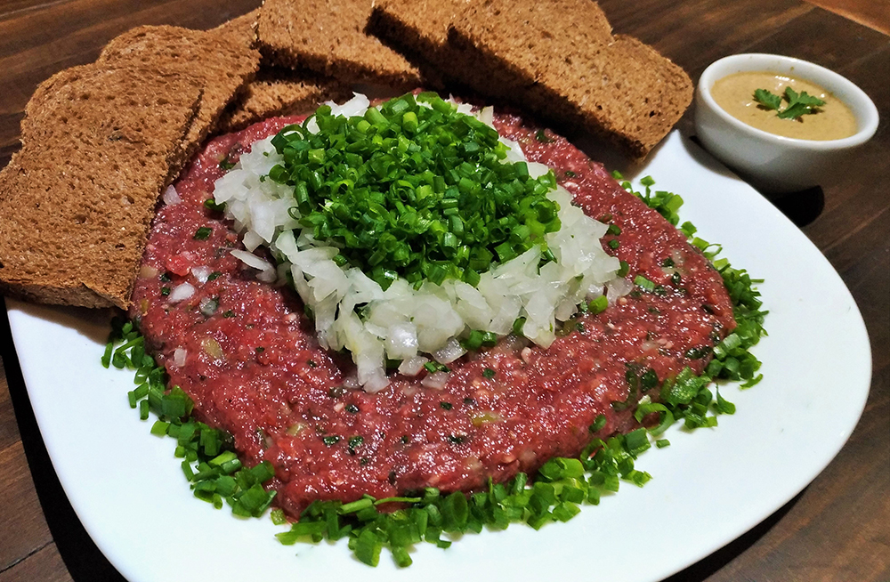
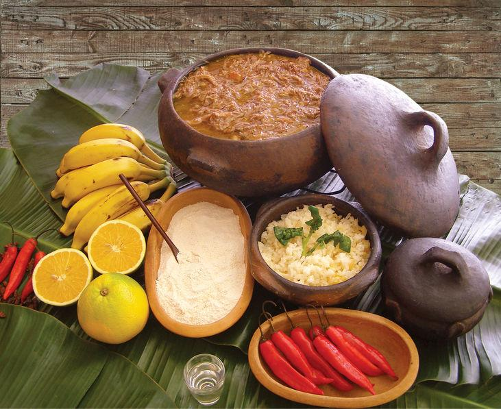
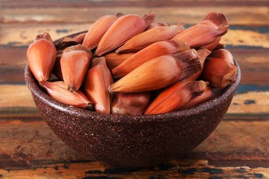
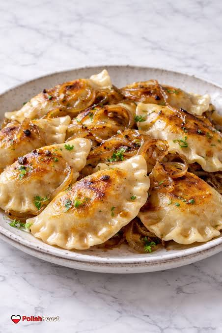
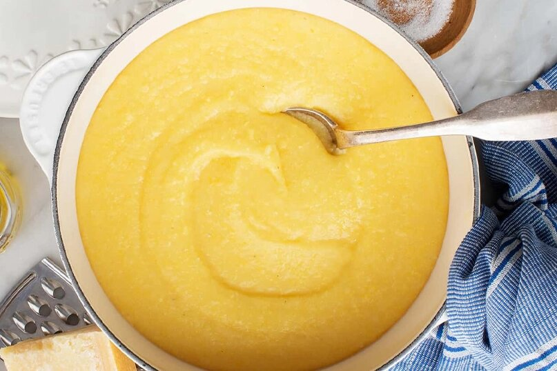
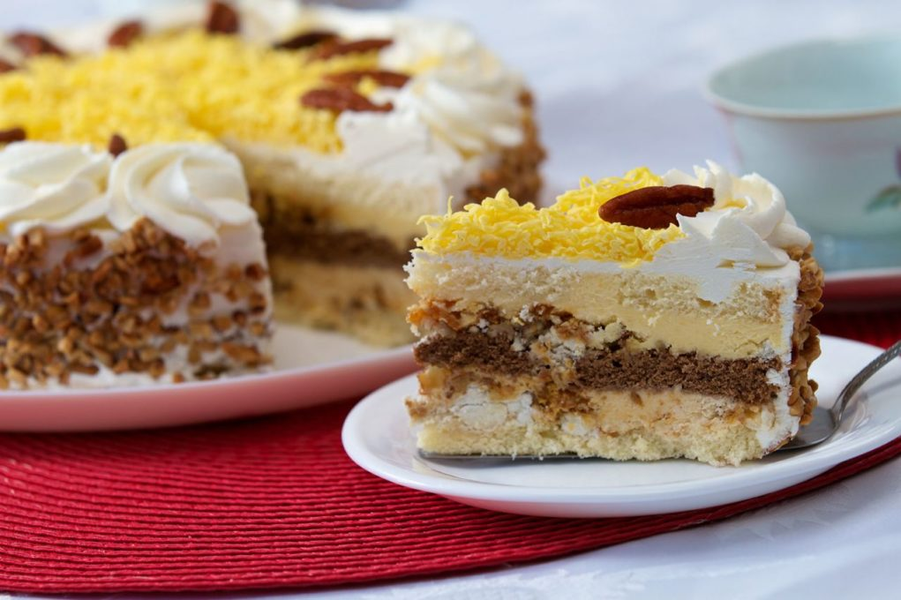

Carne de Onça
Tradicional em Curitiba, é preparada com carne bovina crua temperada, geralmente servida sobre broa de centeio, com cebola e cheiro-verde.
Prato típico Saiba maisConheça os sabores de Curitiba e do Paraná. A gastronomia da região reúne pratos tradicionais, ingredientes locais e influências de diferentes povos.
Exibindo 6 pratos.

Tradicional em Curitiba, é preparada com carne bovina crua temperada, geralmente servida sobre broa de centeio, com cebola e cheiro-verde.
Prato típico Saiba mais
Prato tradicional do litoral do Paraná, preparado com carne bovina cozida lentamente. Costuma ser servido com farinha de mandioca e banana.
Prato típico Saiba mais
Semente da araucária, muito presente na cultura paranaense. Pode ser consumida cozida ou utilizada em diferentes receitas da culinária regional.
Prato típico Saiba mais
Prato tradicional da culinária polonesa, formado por uma massa recheada, frequentemente com batata, queijo ou repolho. Representa a influência dos imigrantes na região.
Culinária de imigrantes Saiba mais
Prato de origem italiana feito com farinha de milho. É encontrado em diferentes preparações e está associado à herança gastronômica italiana no Paraná.
Culinária de imigrantes Saiba mais
Sobremesa tradicional das confeitarias paranaenses, preparada em camadas de bolo, recheios cremosos e outros ingredientes. É uma referência da doçaria regional.
Doce Saiba maisA gastronomia de Curitiba reflete sua formação cultural. A influência dos povos indígenas, dos imigrantes europeus e das tradições do Paraná contribuiu para a variedade de pratos encontrados na cidade.
Conheça a gastronomia paranaense